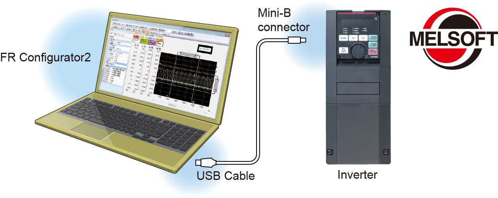

Inverters-FREQROL FR-A800 Series EASY SETUP & EASY TO USE

EASY SETUP & EASY TO USE
A range of equipment and functions are prepared allowing
work to be performed anywhere to suit product life cycles.
Fully equipped with a variety of simple functions and equipment to improve work efficiency.
Streamlining the startup process
Parameter copying with USB memory NEW
A USB host connecter (A type), which allows external device connections, has been added. Parameters can be copied to commercial USB memory devices.
Easy setup with the Inverter Setup Software (FR Configurator2)
- It is a software which is easy to use and has unity as Mitsubishi Electric FA products with MELSOFT common design and good operability.
- Easy plug-and-play connection to USB terminal equipped as standard
- Free trial version, which contains start-up functions, is available. It can be downloaded at Mitsubishi Electric FA Global Website.
Easy wiring to the control circuit NEW
Spring clamp terminals have been adopted for control circuit terminals.
Wires can be protected against loosening under vibrations during transportation of the inverter. Ten additional terminals are used as compared to the FR-A700 series. Round crimping terminals can also be used by employing a control terminal option (FR-A8TR).
Easy-to-follow display improves the operability
Easy operation with GOT NEW
- Automatic communication is possible without specifying any parameter settings simply by connecting to the GOT2000 series.
- The PLC function device monitor can be displayed at the GOT2000 series.
Batch control of multiple inverter device monitors is possible with a single GOT unit. - The sample screen data for the A800 can be found in the screen design software of the GOT2000 series. The newest version of the screen design software can be downloaded from the Mitsubishi Electric FA Global Website.
Easy-to-follow parameter configuration NEW
One of the selectable mode by the operation panel is the Group parameter mode, which provides intuitive and simple parameter settings.
(The conventional parameter setting mode is selected by default.)
| Major division |
Name |
|---|---|
| E | Environment |
| F | Acceleration/deceleration |
| D | Start and frequency commands |
| H | Protective function |
| M | Monitor |
| T | Multi function I/O terminal |
| C | Motor constant |
| A | Applications |
| B | Applications (position control) |
| N | Communication |
| G | Control |
Easy-to-read operation panel NEW
A 5-digit, 12-segment display has been adopted for the operation panel (FR-DU08) for a more natural character display. Furthermore, an optional LCD operation panel (FR-LU08) adopting an LCD panel capable of displaying text and menus is also available.
To aid with maintenance
Reduced wiring check time
Split-type covers are adapted for all capacity models.
Maintenance is now easy because all an operator has to do is to remove the cover for the target wiring area.
Maintenance and control of multiple inverters (Option) NEW
Serial number reading is possible using the optional LCD operation panel (FR-LU08) or the Inverter Setup Software (FR Configurator2). Administration of different inverters has become much more simple.